Level 75 reference · Zenith rules
Why Ninja?

Ninja has one of the best job fantasies of any job in 75 cap in my opinion, dual wielding and swinging fast is very fun while throwing ninja stars and ninjutsu nuking is something that many players really resonate with. I personally think Ninja excels as a new player job, being quite strong for things like BCNMs, Soloing, Farming, Missions, Questing, and NM Camping, the checklist of things you will have to do for the first 6+ months of being 75. As your character grows and starts venturing further into true end game with stronger gear, Ninja begins to lag behind more solidified roles, but a dedicated and good Ninja player can find niches and pockets where the job still has great use. In end game scenarios, Ninja can be a main tank using Nin/drk to tank the strongest of HNMs, it can be a powerful nuking job with Nin/rdm and the elemenatal wheel, or it can be a first provoke melee DPS with Katanas a-swingin. In all 3 of these roles Ninja is not the best job, but it is servicable and can do all of these roles well. Like jobs such as Blue Mage or Puppetmaster, Ninja does not hold your hand and needs true mastery and effort to be to shine, but it certainly can.
Ninja's Role
Ninja like other hybrid jobs has multiple different roles it can fill based on the needs of the event. Navigating which role you need to play is crucial to getting the most out of Ninja, unlike meta staples like War, Sam, Brd, or Rdm, you don't have a set defined easy thing you do like "Hit thing" or "Heal". Instead Ninja can take on the mantle of Physical DPS, Magical DPS, or Tank. Knowing how to do all 3 of these, and when to use all 3 of them, is very important to being a useful Ninja. I will define these 3 styles and talk about them in this section:
Physical DPS
This is the most straight forward version of Ninja, the one you will generally learn while leveling 1-75 and probably will use the most. This style revolves around using DPS gear and Katanas to push damage like a front line DPS, not dissimilar from Samurai, Warrior, or any other myriad of physical DPS. You should also function as the "First Voke" of the party, provoking mobs to you and positioning them for the party to start fighting, you having access to Utsusemi makes this very efficient as other first voke options probably are just taking damage or riding Seigan. Ninja is really not a great physical DPS, it isn't a waste of a spot and certainly provides some benefit, but it sadly just is probably the lowest DPS job in the game that you would at least take as a DPS. Like all things in FFXI though, an exceptional Ninja DPS is going to beat a mediocre Sam/War/Drk/Drg, so if you are the better player you can make it work.
Magical DPS
Honestly this is one of the coolest modes Ninja has, FFXI really only has one meta magical DPS (Black Mage) but Ninja is actually very good at outputting magical damage in situations where it works. This mode involves using the Elemental Staves and spamming the ninja nuking wheel in a cycle to output lots of small nukes. The pros to this is you are a defensively sound nuking job, you can actually tank the mobs when they turn to you and hit you unlike Black Mage, it also does do good damage. The cons to this are you feed massive amounts of TP compared to Black Mages who focus on single big nukes instead of many small nukes. Ninja also doesn't seem to get the magic accuracy necessary to make this mode good on everything, some mobs just resist too much for you to land any real damage. I've seen this mode do very well on things like KS99 Wyrm or smaller NMs like Faust.
Tank
FFXI does not have dedicated "Tanks" in 99% of content, this is a role that is only done on maybe 15 mobs in the game that have reasons you can't just stick a War or Sam on them. HNMs are the primary place you see dedicated tanks in our current era, things like Tiamat which spend half the fight in the air and take no physical damage while also outputting high physical/magical damage, this adds together to needing a dedicated tank that can generate hate not via damage but via spells and abilities. Ninja is one of the three-ish dedicated tanks in the game, it's actually very good at it but is probably the worst of the three which leads to it being somewhat off-meta at this point. Tanking on Ninja involves playing an entirely different way than normal, you use weapons like an Earth Staff and Hades Sainti for their stats not their damage, you use Dark Knight sub job to get access to high hate generating spells that you can spam to hold hate, and you use gear sets like Arhat's for their physical defensive properties, turning it into a physically defensive powerhouse instead of a frail evasion tank. There is a whole section of this guide devoted to this mode as it is criminally misunderstood and relatively complicated in execution.
Abilities and Traits

Why does Ninja not get any abilities?
Mijin Gakure (1) - Sacrifices user's life to deal damage to an enemy, 2:00:00 recast.
This is Ninja's 2 hour ability. To be honest this is one of the weakest 2h's in the game, when you press it you will do a non-elemental magic attack that is based on your current HP to the mob and you will die. Unlike a normal death, Mijin Gakure does not lose you any EXP, which means this abilities primary use is for situations you want to die like death warping back to your homepoint or using it during an already guaranteed wipe to preserve EXP.
Sange (Merited) - Consumes remaining shadow images to perform ranged attacks, 15:00 recast but can be reduced to 5:00 with additional merits.
Sange is most similar to Ranger's Barrage, if you have a full Utsusemi: Ni up it will fire 5 Shurikens on your next throw for a large burst of damage. This ability suffers from a lack of good high level shurikens, your two options are Koga Shurikens and Fuma Shurikens. Koga are extremely rare and hard to get, there's only one source and it drops 1 at a time, so you'd have to run that BCNM 5x for one single Sange throw. Fuma are crafted, but the recipe only yields 3 shurikens per craft and the price is high, making them largely unviable. That leaves Manji Shurikens, which are level 48, as the only really viable shurikens to use with Sange. Manji still have very high base damage, so this ability isn't terrible with them, but it could be a lot better.
Merits
Ninja's merit point upgrades tend to focus around nuking with some other small utility abilities
Category 1:
Subtle Blow Effect - This is just adding 1/2/3/4/5 subtle blow, it's probably a default upgrade as it just helps with less mob TP feed, but it's not something to get excited about.
Katon/Hyoton/Huton/Doton/Raiton/Suiton Effect - This merit adds 2 base damage and 2 to the -resist to the nuke that you choose per level, capping at 10 and -10. Good for nuking, choosing which one(s) to do is a personal choice. I chose Hyoton because Aquilo's/Ice Staff has INT+5 making it the "best" ele staff and Tsurara is very cheap and plentiful.
Category 2:
Sange - I've already covered this in the abilities section, but I like this merit a lot. Fully merited it's a nice 800~ damage burst on mobs you would be using physical damage on normally. You could skip this if you want to focus more heavily on the nuking side of Ninja and get more :San merits.
Ninja Tool Expertise - 5% per upgrade chance to not consume a ninjutsu tool when casting. If you don't plan to do any nuking this can certainly be a merit to use to save some gil.
Katon/Hyoton/Huton/Doton/Raiton/Suiton: San - This merit both unlocks the spell and increases it's Matk and Macc by 5 for every upgrade. These are higher tier ninjutsu nukes that have to be unlocked via merits, they are not actually a straight upgrade as they do hit significantly harder but have almost double the cast time as well. Some people put 1 point into each to have spread coverage, while I recommend focusing on 5/5ing one nuke as a way to fill out your wheel since you will generally be waiting on cooldowns to come back around while wheeling.
Sub Jobs

This is the default sub job for Ninja, you will use this almost exclusively while leveling 1-75 and in any event that you are doing melee DPS. The most important ability this subjob adds is Provoke, a 30 second cooldown ability that gives you 1800 Volatile Enmity. Provoke is not particularly good for long term hate building, as volatile enmity decays fast, but it is good for getting a mobs attention immediately and keeping it stationary to start fighting it, commonly referred to as a "First voke". You also get Berserk, this adds +25% attack at the cost of 25% defense, a massive upgrade in DPS especially for an attack starved job like Ninja. Don't worry about the defense, you generally will mitigate all damage taken with Utsusemi and you won't be /war in any event that you are worried about taking massive physical damage. Next you get Double Attack, this is just passively +10% rate to double attack, this can trigger on weaponskills and on multi hit weaponskills it can trigger twice. Finally Warcry is a short burst of attack as well as generating high volatile enmity like provoke does.

This is the subjob used for tanking HNMs or high level monsters. Every Ninja looking to break into end game content should have this subjob ready, but it still is very niche. I will go into more detail on how this subjob functions under the HNM tanking section of this guide.

This subjob is primarly used for nuking strategies. Primarly it gives Fast Cast II, which gives -15% cast time -7.5% recast time on your spells. This synergizes very well with Ninjas spam nuking style where you are trying to push out as many small nukes as possible to add up to high DPS. You also get Magic Attack Bonus I, adding 20 matk to your nukes. Technically Black Mage sub gets a higher tier of Magic Attack Bonus, but it adds very little for the loss of Fast Cast. It's also worth mentioning this sub can see some very limited play as an alternative to Nin/drk on fights where stun doesn't land and snap hate doesn't matter. The primary example I would give is Jailer of Love, you can stoneskin yourself and use spells like Dispel and Sleep as hate generators.

Primarly used as a farming subjob for Treasure Hunter , it also provides Evasion Bonus II, adding +22 Evasion which can be useful in certain pure evasion solos.
Weapon skills
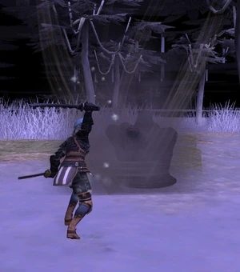 |
Blade: Jin - This is your most commonly used weaponskill at 75. This weaponskill has the ability to critical hit, meaning that Ninja is a job that quite likes critical hit rate items and DEX gear. This weaponskill really lives or dies by critting, and sadly in areas where you can't push high amounts of critical hit rate it will not do well. Generally speaking though this is your "default" weaponskill and will be the one you want to gear for and plan around.
|
|---|---|
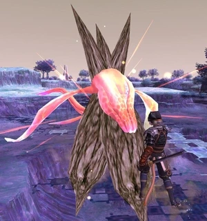 |
Blade: Chi - Two hit earth elemental hybrid weaponskill, meaning it hits both as a physical and a magical weaponskill. This weaponskill has the ability to do well, but it needs to be paired with a Shamo to crank up its FTP. Also this weaponskill is completely dependent on a high Attack stat, seeing large swings when berserk is up or down, it does scale with Magic Attack so an item like a Novio Earring actually sees play here. All hybrids do well on mobs that take bonus damage, so this thing shreds mobs like Qutrubs or Hpemdes.
|
Blade: Ku - Ninja's quested weaponskill, this is sadly pretty underwhelming. It hits 5 times with very low modifiers and no crit chance like Jin has. The only time Blade: Ku makes sense to use is for building skillchains, as Ku can make 2 step darkness with many common weaponskills.
| |
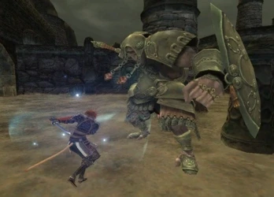 |
Blade: Kamu - Ninja's mythic weaponskill, this is a very situational skill that is used purely to lower the targets accuracy in situations that may be required. The damage on this skill is very low but it may just be the thing you need to win a particularly hard solo. One interesting thing is it does have good skillchain properties and an attack bonus, but it just isn't enough to make up for it being 1 hit low FTP.
|


Weapons

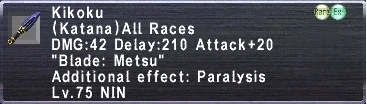
Kikoku is Ninja's relic weapon, the ultimate weapon in era for the job. I should first say I do not feel very qualified talking about Kikoku, I have never owned one and really have never even played with one, I will talk about it theoretically but just know that someone with more experience with the weapon may have a different take. The main draw of Kikoku is just the raw stats that relic weapons give, unparalleled base damage with a fast delay, +20 Attack that Ninja desperately needs, and occasionally "relic procing" for 3x normal damage on a swing. Overall this weapon pumps your raw damage output up quite a bit. The paralyze proc is honestly very strange, seeing as you can just cast Jubaku if paralyze is very valuable, but there are plenty of situations you don't want to waste time casting and random paralyzes are nice. Blade: Metsu on paper looks like an okay weaponskill, 3.0 FTP is high and DEX is not a terrible mod, but Blade: Jin just seems to outperform it consistently damage wise. The aftermath of Metsu is also pretty "whatever", granting 10 subtle blow. This Katana is certainly the best Katana in era, but it also flops in a lot of respects and is not going to be anywhere near the upgrade that most relics provide.

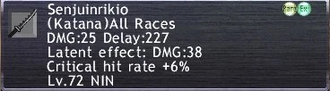
Senji is Ninjas default weapon, you will probably get this fairly easily and rarely unequip it. The 6% critical hit rate synergizes well with Blade: Jin, the WS you will be using most of the time with this Katana. It's worth noting that Critical Hit Rate on weapons is exclusive to the hand it's equipped in, so this item should be equipped in the main hand to pump Blade: Jin numbers, the only time this could see offhand play is with a Kikoku.

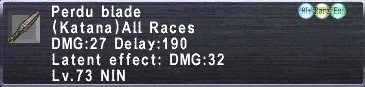
Perdu Blade is the best offhand Katana in the game, 190 delay dwarfs any of the fast end game Katanas available previously while also having an actually relatively high base damage and Accuracy+5 Attack+10 hidden effect. Unji and Fudo are its two competitors, Unji is comically power crept by Perdu Blade in every aspect except the DEX, and honestly there is probably no situation that you can't find a good Accuracy for DEX swap using Perdu Blade over Unji. Fudo is a very different weapon, but offhands really don't care about having high base damage and the critical hit rate doesn't benefit your Blade: Jins even. I think it's safe to say that Eden has a new king offhand Katana, with the only situation I'm not 100% sure on being Senji vs Perdu for a Kikoku offhand.

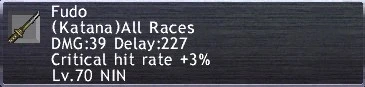
This is Senji's little brother, it is buyable and relatively cheap while having some critical hit rate as well. This is commonly used as an offhand for Senji, even though it has 1 higher base damage because critical hit rate on weapons don't share across hands, so you lose 3% critical hit rate on your Blade: Jins equipping this in your main hand. This item is not very competitive with Perdu Blade available now, but could be used as you build up your mercenary rank and imperial standing for the Perdu Blade.

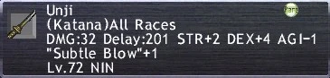
Unji is a fast Katana with good base stats that allows it to excel as an offhand weapon. Senji/Unji is competitive with Senji/Fudo, although I hesitate to say better. Where you will see this weapon pull ahead of Fudo as an offhand is when you are in a sweet spot for dDEX, the formula that calculates critical hit rate. If you are within the +40-50 DEX over mob AGI range, Unji's 4 DEX actually gives +4% Critical Hit Rate, and that crit counts towards your main hand and thus weaponskill hits. However if you are not within that sweet spot, Unji might not even give 1% Critical Hit Rate, which torpedoes its usefulness. There is also a build that uses this as a mainhand and offhands Unsho, but I don't particularly think it is better than Senji/Unji. This item is not very competitive with Perdu Blade available now, but could be used as you build up your mercenary rank and imperial standing for the Perdu Blade.

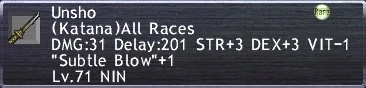
This is a somewhat iconic Katana, back when it was introduced it was considered to be very powerful, both because it was rare and because TP calculations were different back then and faster weapons were better. I remember this selling for upwards of 40-50m for years after release on retail. The sad truth is Unsho is not really very good on Eden, as an offhand Unji is just better and if you pair with Unji for the famous U/U combo you will do less DPS than Senji/Fudo or Senji/Unji. It isn't a bad Katana, it actually is not far off from being good and it is very fun to swing fast and build DEX builds around it, but I'm not sure it will ever see normal play on Eden. This item is not very competitive with Perdu Blade available now, but could be used as you build up your mercenary rank and imperial standing for the Perdu Blade.

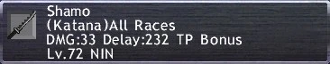
This is a fun weapon that is used as a mainhand for Blade: Chi specifically. Chi scales with TP much like Gekko+Hagun for Samurai, going from .5 FTP to .75 FTP! Chi is an attack hungry hybrid weaponskill so this Katana won't see a lot of mainstream play, but certainly has a place in the kit, especially when fighting mobs that take bonus magic damage like Qutrubs or Goldfish in sea. I've seen limited success with this combo, it's significantly better against fodder and seems to fall off a cliff when berserk is down, but has places it's good.

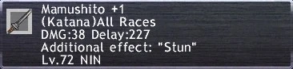
This was a popular katana in era that could fit into your katana repertoire on Eden. The Stun proc on this seems to be around 5% in my testing, 10% with two of them which isn't too bad. This Katana is mostly a judgement call on if you can get away with using more damage and killing the mob faster, or if you really need more defensive output. I do think for soloing it makes more sense to use Mamushito+1s than Evasion katanas given how little evasion they give.
Gear Sets
| TP Set - https://www.ffxiah.com/item-sets/400950 | |||||||||||||||||||||||||||||||||||||||||||||||||||||||||||||||||||||||||
|---|---|---|---|---|---|---|---|---|---|---|---|---|---|---|---|---|---|---|---|---|---|---|---|---|---|---|---|---|---|---|---|---|---|---|---|---|---|---|---|---|---|---|---|---|---|---|---|---|---|---|---|---|---|---|---|---|---|---|---|---|---|---|---|---|---|---|---|---|---|---|---|---|---|
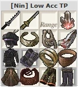 |
Stat Priorities: Haste > Accuracy (Cap) > Dual Wield > Store TP > Attack.
406 Accuracy (Hume DEX, Merited Katana, Bream Sushi). Ninja has a lot of flex in their TP set and you should have multiple accuracy tiers depending on the content you are facing. Haubergeon +1, Usukane Sune-Ate, and a 2nd Toreador's Ring are very efficient accuracy swaps you want to have on hand. Peacock Charm could also see some play if you really need accuracy, if you need to lose accuracy you could use a Bomb Core. Koga Tekko +1 or NQ are good at night. Shinobi Ring is very good if you can force your HP down and live. | ||||||||||||||||||||||||||||||||||||||||||||||||||||||||||||||||||||||||
| |||||||||||||||||||||||||||||||||||||||||||||||||||||||||||||||||||||||||

| Sange/Throwing - https://www.ffxiah.com/item-sets/400958 | |||||||||||||||||||||||||||||||||||||||||||||||||||||||||||||||||||||||||
|---|---|---|---|---|---|---|---|---|---|---|---|---|---|---|---|---|---|---|---|---|---|---|---|---|---|---|---|---|---|---|---|---|---|---|---|---|---|---|---|---|---|---|---|---|---|---|---|---|---|---|---|---|---|---|---|---|---|---|---|---|---|---|---|---|---|---|---|---|---|---|---|---|---|
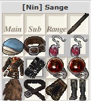 |
Stat Priorities: Ranged Accuracy (Till Cap ) > STR > Ranged Attack.
When 5/5 merited, Sange is a 5 minute cooldown mini barrage that can add a significant amount of DPS to a Ninjas kit. Shuriken strength is Koga > Fuma > Manji > Juji > Shuriken. Koga you can only get 1 from each run of the Ashu Talif ENM, Fuma are currently bugged and craft 33 per synth instead of 3 which makes them by far your best option, Manji are the ones you will use after Fuma gets fixed. Ninja has A- throwing skill and items like AF+1 hands provide massive racc, so you really don't need to worry much about it. | ||||||||||||||||||||||||||||||||||||||||||||||||||||||||||||||||||||||||
| |||||||||||||||||||||||||||||||||||||||||||||||||||||||||||||||||||||||||

| Blade: Jin - https://www.ffxiah.com/item-sets/401080 | |||||||||||||||||||||||||||||||||||||||||||||||||||||||||||||||||||||||||
|---|---|---|---|---|---|---|---|---|---|---|---|---|---|---|---|---|---|---|---|---|---|---|---|---|---|---|---|---|---|---|---|---|---|---|---|---|---|---|---|---|---|---|---|---|---|---|---|---|---|---|---|---|---|---|---|---|---|---|---|---|---|---|---|---|---|---|---|---|---|---|---|---|---|
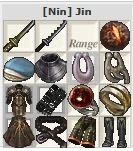 |
Stat Priorities: Accuracy > DEX (Until dDEX cap or ignore if you can't) > STR/Attack.
This weaponskill is a very tough one to gear for, as it is very crit dependent while having no base crit. What this means is you need to heavily rely on dDEX to pump up your crit rate, but most things we just don't know the AGI of the mob meaning we can't properly target our DEX. I personally have set this set against Greater Colibri (117 DEX) but every mob has different AGI. In some events like Dynamis the mobs might just have too high AGI to even stack DEX in which case you should go for STR/Attack. The highest amount of DEX you will get without doing some real not worth it swaps is around 130-135 depending on race. That means you can reliably use a DEX set (assuming you can cap accuracy with it) up until the mob has 80 AGI. Once the mob goes into the high 80s AGI wise you really can't use DEX anymore for crit. This would be easier if we knew mob AGI, but overall we don't and just have to guess except for a small amount of mobs in the game. Don't forget to check your RSE. Alternatives aren't listed in particular order, as you may need Accuracy or DEX or STR depending on the build. | ||||||||||||||||||||||||||||||||||||||||||||||||||||||||||||||||||||||||
| |||||||||||||||||||||||||||||||||||||||||||||||||||||||||||||||||||||||||

| Blade: Chi - https://www.ffxiah.com/item-sets/401081 | |||||||||||||||||||||||||||||||||||||||||||||||||||||||||||||||||||||||||
|---|---|---|---|---|---|---|---|---|---|---|---|---|---|---|---|---|---|---|---|---|---|---|---|---|---|---|---|---|---|---|---|---|---|---|---|---|---|---|---|---|---|---|---|---|---|---|---|---|---|---|---|---|---|---|---|---|---|---|---|---|---|---|---|---|---|---|---|---|---|---|---|---|---|
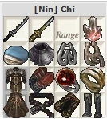 |
Stat Priorities: Accuracy > Magic Attack > STR/Attack > INT.
Blade: Chi is a hybrid WS, it starts with a physical hit that is then taken and multiplied by Magic Attack and other magic modifiers. What this means is that Magic Attack is a very strong stat for Chi, but also beefing up the initial physical hit is very important via Attack/STR. It also has good FTP scaling which makes Shamo uniquely powerful for this WS. The primary use for Blade: Chi is against things like Hpemde or Qutrub which take bonus damage, you actually deal +200% damage (for the magical and physical side) instead of +100%. | ||||||||||||||||||||||||||||||||||||||||||||||||||||||||||||||||||||||||
| |||||||||||||||||||||||||||||||||||||||||||||||||||||||||||||||||||||||||

| Blade: Ku - https://www.ffxiah.com/item-sets/401247 | |||||||||||||||||||||||||||||||||||||||||||||||||||||||||||||||||||||||||
|---|---|---|---|---|---|---|---|---|---|---|---|---|---|---|---|---|---|---|---|---|---|---|---|---|---|---|---|---|---|---|---|---|---|---|---|---|---|---|---|---|---|---|---|---|---|---|---|---|---|---|---|---|---|---|---|---|---|---|---|---|---|---|---|---|---|---|---|---|---|---|---|---|---|
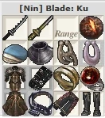 |
This is not a weaponskill I really recommend using ever, maybe for skillchains if you are opening for a strong relic darkness WS. Low STR/DEX mods make it in general weaker for this set, favoring attack. Not much to say about this really. | ||||||||||||||||||||||||||||||||||||||||||||||||||||||||||||||||||||||||
| |||||||||||||||||||||||||||||||||||||||||||||||||||||||||||||||||||||||||

| Evasion - https://www.ffxiah.com/item-sets/400952 | |||||||||||||||||||||||||||||||||||||||||||||||||||||||||||||||||||||||||||||||||||||
|---|---|---|---|---|---|---|---|---|---|---|---|---|---|---|---|---|---|---|---|---|---|---|---|---|---|---|---|---|---|---|---|---|---|---|---|---|---|---|---|---|---|---|---|---|---|---|---|---|---|---|---|---|---|---|---|---|---|---|---|---|---|---|---|---|---|---|---|---|---|---|---|---|---|---|---|---|---|---|---|---|---|---|---|---|---|
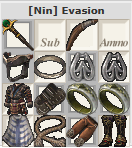 |
Stat Priorities: Evasion/Evasion Skill/AGI depending on which gives the most Evasion.
This isn't so much a coherent set as a list of all the highest evasion items in each slot. I would recommend building an evasion set for practical use, mixing in offensive gear so you can hold hate and push more DPS. Many of these items I don't recommend really even carrying, as using a more common sense option saves you a wardrobe slot and is better in most situations (Like Optical Hat over Wivre Mask +1). Personally my evasion set includes a mix of Evasion and Haste so I can continue pushing DPS and holding hate while also trying to evade. Koga Legs have high eva at night. and good offensive stats even. Ninja legs have high eva at night. Windurst scarf is BIS under its condition. | ||||||||||||||||||||||||||||||||||||||||||||||||||||||||||||||||||||||||||||||||||||
| |||||||||||||||||||||||||||||||||||||||||||||||||||||||||||||||||||||||||||||||||||||

| Nuking - https://www.ffxiah.com/item-sets/400991 | |||||||||||||||||||||||||||||||||||||||||||||||||||||||||||||||||||||||||||||||||||||
|---|---|---|---|---|---|---|---|---|---|---|---|---|---|---|---|---|---|---|---|---|---|---|---|---|---|---|---|---|---|---|---|---|---|---|---|---|---|---|---|---|---|---|---|---|---|---|---|---|---|---|---|---|---|---|---|---|---|---|---|---|---|---|---|---|---|---|---|---|---|---|---|---|---|---|---|---|---|---|---|---|---|---|---|---|---|
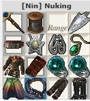 |
Stat Priorities: Magic Attack Bonus = INT > Ninjutsu Skill = Magic Accuracy.
For the most part a lot of these options are self explanatory, there is some discussion over MAB vs Skill vs INT in some slots like Feet or Head, Ninja nuking is not quite as accurate as Black Mage nuking so I can see the argument but this is what seems to be the best. *RSE Gear can play a big role in this set, many races get RSE Belts, RSE Hands, and RSE Ammo that are BIS or good for this set. *Elemental Obi's are very good for this set. | ||||||||||||||||||||||||||||||||||||||||||||||||||||||||||||||||||||||||||||||||||||
| |||||||||||||||||||||||||||||||||||||||||||||||||||||||||||||||||||||||||||||||||||||

| Debuff - https://www.ffxiah.com/item-sets/400956 | |||||||||||||||||||||||||||||||||||||||||||||||||||||||||||||||||||||||||||||||||||||
|---|---|---|---|---|---|---|---|---|---|---|---|---|---|---|---|---|---|---|---|---|---|---|---|---|---|---|---|---|---|---|---|---|---|---|---|---|---|---|---|---|---|---|---|---|---|---|---|---|---|---|---|---|---|---|---|---|---|---|---|---|---|---|---|---|---|---|---|---|---|---|---|---|---|---|---|---|---|---|---|---|---|---|---|---|---|
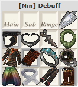 |
Magic Accuracy = Ninjutsu Skill > INT.
The goal with this set is to land your Jubaku, Hojo, Kurayami, and Dokumori. To do so you want to get as much Magic Accuracy as possible, whether through Macc the stat, Ninjutsu Skill which gives 1 Macc for every 1 Skill, or INT converting into Macc. You don't particularly need all these items to land the debuffs but no one likes being resisted. | ||||||||||||||||||||||||||||||||||||||||||||||||||||||||||||||||||||||||||||||||||||
| |||||||||||||||||||||||||||||||||||||||||||||||||||||||||||||||||||||||||||||||||||||

HNM Tanking
I want to start by talking about tanking, when I use the word tanking I mean a very specific scenario on very specific mobs. Tanking in this context is HNM tanking, these are mobs too strong to hit with melee weapons and too offensively powerful to tank with DD gear or evasion gear. These specific mobs tend to require a change in strategy, using Nin, Pld, or Rdm traditionally and holding hate by using high enmity generation spells and abilities. You also gear differently, using a myriad of defensive items to tank less physical damage, or resist items to resist magical attacks. Meta wise, Ninja is the least meta of the 3 end game tank jobs, but it isn't significantly worse and it even has some things it is best at versus the other two.
Hate Generation
Traditionally HNM tanking by a Ninja involves using the subjob Dark Knight to gain access to its strong hate generation spells and abilities. The hate generation of a spell is expressed in Cumulative Enmity (CE) and Volatile Enmity (VE), both of these cap at 10,000 each. Enmity+ gear is very simple as every +1 is +1% to the generated CE or VE, capping at +100 or -50.
CE does not decay over time, the only way to lose CE is specific actions mobs do to you, getting hit, getting enfeebled, losing a utsusemi shadow, or a pure hate reset skill. CE is traditionally the harder of the two to build because of this.
VE does decay over time, it decays at a rate of -60VE/second which means tanks need to continually top off their VE even when reaching the 10,000 cap. This is one of the reasons that Provoke is not a strong tool for keeping hate, it gives a large amount of VE (1800) but by the time your provoke comes off cooldown you will have decayed all of that.
Here is a quick table of the tools Ninja can/does use when tanking to keep hate.
| Ability | CE | VE |
|---|---|---|
| Stun | 180 | 1280 |
| Sleep | 320 | 240 |
| Bind | 1 | 640 |
| Poison | 1 | 320 |
| Hojo: Ni | 80 | 240 |
| Kurayami: Ni | 80 | 240 |
| Dispel (Rdm) | 320 | 320 |
| Blind (Rdm) | 1 | 640 |
| Last Resort | 1 | 1300 |
| Souleater | 1 | 1300 |
A typical Nin/drk hate rotation, when properly supported with enough haste/haste gear, is Stun > Sleep > Bind > Hojo > Kurayami > Repeat. Once you cap CE you can think about swapping in Poison to maintain your VE cap over something like Sleep or Hojo/Kurayami. Stun is a great thing to spam on CD no matter what, as it lowers the offensive pressure of the mob. Last Resort and Souleater are incredible snap hate cooldowns to start a fight or to re-establish hate when you lose it via a hate wipe skill. Red Mage sub is much less common, but gets access to Dispel instead of Stun, a strong CE tool but a large loss of VE from stun.
Defense
One of the things I think many people don't understand about Ninja when tanking end game mobs is that the job is extremely durable. The assumption, based on how these jobs are played at lower levels, is that Ninja is a frail but evasive tank, while Paladin is a defensive chonky wall with no evasion. This could not be further from the truth, Ninja gets access to incredible defensive gear that allows it to stack the stat "-Physical Damage Taken%" and cut raw damage off any damage it takes. With a mixture of easily buyable auction house gear, Ninja can get something in the ballpark of -40% PDT, and with perfect gear can easily cap at -50%, reducing the incoming damage by half and making Ninja actually exceptionally strong defensively. Combine that with Ninjas extra Utsusemi: Ni shadow, extremely high parry, and 2 stuns via drk subjob, and Ninja is actually exceptionally durable.
Magic Damage is probably the harder thing for Ninja to handle when compared to other tanks. There are two ways to mitigate incoming magic damage, you either stack a generic "-Magic Damage Taken%" set or you target a specific element of magic like Fire or Water and stack resists to that element. Ninja is quite good at stacking elemental resistances, being the only tank that gets access to items like Suzaku's Sune-Ate with it's massive +50 fire resist. The other way, -Magic Damage Taken% gear, is where Ninja really struggles, getting access to about a 1/3rd of the options that Rdm or Pld do. There is sadly no way around this, and Ninja is just significantly weaker when getting hit with generic magic attacks that pierce shadows.
Gear Sets
| Physical Defense - https://www.ffxiah.com/item-sets/400808 | |||||||||||||||||||||||||||||||||||||||||||||||||||||||||||||||||||||||||||||||||||||
|---|---|---|---|---|---|---|---|---|---|---|---|---|---|---|---|---|---|---|---|---|---|---|---|---|---|---|---|---|---|---|---|---|---|---|---|---|---|---|---|---|---|---|---|---|---|---|---|---|---|---|---|---|---|---|---|---|---|---|---|---|---|---|---|---|---|---|---|---|---|---|---|---|---|---|---|---|---|---|---|---|---|---|---|---|---|
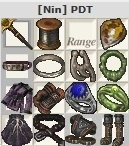 |
Stat Priorities: Damage Taken -% (Caps at 50%) > Physical Damage Taken -% (Caps at 50%) > Parry > Defense/VIT/HP.
You want to wear this when you are expecting to take a physical hit from an enemy, it's also a great default idle set when tanking as you may run into unexpected weaponskills or double attacks that strip your shadows faster than you think. Gearing wise, the most important thing is your Damage Taken stats, every other stat is relatively unimportant and hard to even tell if they matter. I like to use Parry in those slots, but there is nothing wrong with Defense, VIT, or HP as all have merit. This set posted over caps PDT by a lot, the assumption is Defending Ring is very hard to get and I wanted to list Jelly Ring in the list because it's what most people will use. If you have Defending Ring you can drop Jelly Ring and Darksteel Mittens +1 or some combination to get to the 50% cap. | ||||||||||||||||||||||||||||||||||||||||||||||||||||||||||||||||||||||||||||||||||||
| |||||||||||||||||||||||||||||||||||||||||||||||||||||||||||||||||||||||||||||||||||||

| Magic Damage (Generic) | |||||||||||||||||||||||||||||||||||||||||||||||||||||||||||||||||||||||||||||||||||||
|---|---|---|---|---|---|---|---|---|---|---|---|---|---|---|---|---|---|---|---|---|---|---|---|---|---|---|---|---|---|---|---|---|---|---|---|---|---|---|---|---|---|---|---|---|---|---|---|---|---|---|---|---|---|---|---|---|---|---|---|---|---|---|---|---|---|---|---|---|---|---|---|---|---|---|---|---|---|---|---|---|---|---|---|---|---|
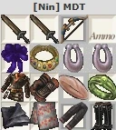 |
Stat Priorities: +1 in every Elemental Resist > Damage Taken -% > Magic Damage Taken -% > Magic Defense Bonus > INT > Elemental Resist.
This is a tough set for Ninja, with Shell V you need 23% MDT to cap and with Shell IV you need 28%. Even with Defending Ring ninja cannot hit this amount. The +1 in every elemental resist opens up resist tiers that are impossible with neutral or negative resist, usually you can achieve this with Jeweled Collar and a Ribbon. Magic Defense Bonus is a rare stat but is point for point almost as strong as MDT. That just leaves the slots which we can't get any useful stats in, in those slots we stack INT although you could also stack elemental resist. | ||||||||||||||||||||||||||||||||||||||||||||||||||||||||||||||||||||||||||||||||||||
| |||||||||||||||||||||||||||||||||||||||||||||||||||||||||||||||||||||||||||||||||||||

| Utsusemi: Ichi - https://www.ffxiah.com/item-sets/400815 | |||||||||||||||||||||||||||||||||||||||||||||||||||||||||||||||||||||||||||||||||||||
|---|---|---|---|---|---|---|---|---|---|---|---|---|---|---|---|---|---|---|---|---|---|---|---|---|---|---|---|---|---|---|---|---|---|---|---|---|---|---|---|---|---|---|---|---|---|---|---|---|---|---|---|---|---|---|---|---|---|---|---|---|---|---|---|---|---|---|---|---|---|---|---|---|---|---|---|---|---|---|---|---|---|---|---|---|---|
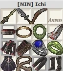 |
Stat Priorities: Spell Interruption Rate -% > Haste > Parry/Evasion/Damage Taken-%
The idea behind this set is to use as much Spell Interruption Rate gear to make sure your Utsusemi: Ichi goes off if you are hit given its long cast time. Ninja cannot cap SID, but it can get high numbers on it, which seems to work well enough on Eden. Generally speaking the recast of Utsusemi: Ichi does not matter as much as the recast of Utsusemi: Ni, so we don't care as much about stacking haste for recast purposes here. The non SID/Haste slots you can just shove in whatever defensive items you want to either mitigate the damage you take or attempt to Parry/Evade the swing all togethor. | ||||||||||||||||||||||||||||||||||||||||||||||||||||||||||||||||||||||||||||||||||||
| |||||||||||||||||||||||||||||||||||||||||||||||||||||||||||||||||||||||||||||||||||||

| Enmity (Recast) - https://www.ffxiah.com/item-sets/400891 | |||||||||||||||||||||||||||||||||||||||||||||||||||||||||||||||||||||||||||||||||||||
|---|---|---|---|---|---|---|---|---|---|---|---|---|---|---|---|---|---|---|---|---|---|---|---|---|---|---|---|---|---|---|---|---|---|---|---|---|---|---|---|---|---|---|---|---|---|---|---|---|---|---|---|---|---|---|---|---|---|---|---|---|---|---|---|---|---|---|---|---|---|---|---|---|---|---|---|---|---|---|---|---|---|---|---|---|---|
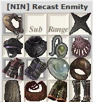 |
Stat Priorities: Haste (Until Recast Cap) > +Enmity
This is the set you will use to cast Stun, Bind, Hojo, and Kurayami. This gives you maximum recast time (-50% faster recast time) while keeping as much enmity+ as possible. You can think of spell recast as 1:1 with Haste, so you need 50% in haste total to max recast. With 1 March + Haste you need 23%. Haste, with 2 March + Haste you need 15%. | ||||||||||||||||||||||||||||||||||||||||||||||||||||||||||||||||||||||||||||||||||||
| |||||||||||||||||||||||||||||||||||||||||||||||||||||||||||||||||||||||||||||||||||||

| Enmity (JA) | |||||||||||||||||||||||||||||||||||||||||||||||||||||||||||||||||||||||||||||||||||||
|---|---|---|---|---|---|---|---|---|---|---|---|---|---|---|---|---|---|---|---|---|---|---|---|---|---|---|---|---|---|---|---|---|---|---|---|---|---|---|---|---|---|---|---|---|---|---|---|---|---|---|---|---|---|---|---|---|---|---|---|---|---|---|---|---|---|---|---|---|---|---|---|---|---|---|---|---|---|---|---|---|---|---|---|---|---|
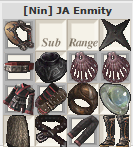 |
Stat Priorities: +Enmity
Very simple, use as much +Enmity as possible. Usually this is used for job abilities which are static recast timers thus cannot have their recast lowered. This can also be used for spells that have faster cooldown timers than you would cast them (like poison). | ||||||||||||||||||||||||||||||||||||||||||||||||||||||||||||||||||||||||||||||||||||
| |||||||||||||||||||||||||||||||||||||||||||||||||||||||||||||||||||||||||||||||||||||

| Fire Resist - https://www.ffxiah.com/item-sets/400888 | |||||||||||||||||||||||||||||||||||||||||||||||||||||||||||||||||||||||||||||||||||||
|---|---|---|---|---|---|---|---|---|---|---|---|---|---|---|---|---|---|---|---|---|---|---|---|---|---|---|---|---|---|---|---|---|---|---|---|---|---|---|---|---|---|---|---|---|---|---|---|---|---|---|---|---|---|---|---|---|---|---|---|---|---|---|---|---|---|---|---|---|---|---|---|---|---|---|---|---|---|---|---|---|---|---|---|---|---|
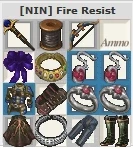 |
Stat Priorities: Fire Resist > Magic Damage Taken > Magic Defense Bonus > INT.
This set is typically used for things like Tiamat, Cerberus, KS99 Wyrm, and Suzaku with Carol+Barfire you can reach extremely high magic evasion and full resist almost every incoming attack. The two Wyrms actually melee in the air with fire attacks, so you can essentially nullify their entire air phase damage with this set. If you are really frisky you can even put this on when an Imp uses amnesia and try to get a resist. Ninja gets a great fire resist kit because of Suzaku's Sune-Ate, something that no other tank has access to. | ||||||||||||||||||||||||||||||||||||||||||||||||||||||||||||||||||||||||||||||||||||
| |||||||||||||||||||||||||||||||||||||||||||||||||||||||||||||||||||||||||||||||||||||

| Ice Resist - https://www.ffxiah.com/item-sets/400889 | |||||||||||||||||||||||||||||||||||||||||||||||||||||||||||||||||||||||||||||||||||||
|---|---|---|---|---|---|---|---|---|---|---|---|---|---|---|---|---|---|---|---|---|---|---|---|---|---|---|---|---|---|---|---|---|---|---|---|---|---|---|---|---|---|---|---|---|---|---|---|---|---|---|---|---|---|---|---|---|---|---|---|---|---|---|---|---|---|---|---|---|---|---|---|---|---|---|---|---|---|---|---|---|---|---|---|---|---|
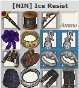 |
Stat Priorities: Ice Resist > Magic Damage Taken > Magic Defense Bonus > INT.
This set is typically used for Jormungand with Carol+Barfire you can reach extremely high magic evasion and full resist almost every incoming attack. The Wyrm actually melees in the air with ice attacks, so you can essentially nullify his entire air phase damage with this set. Many of these items are honestly too hard to get for the payoff and have very easy and cheap replacements so don't worry if this set looks unobtainable. | ||||||||||||||||||||||||||||||||||||||||||||||||||||||||||||||||||||||||||||||||||||
Bowman's Ledelsens will be insane when they come out. | |||||||||||||||||||||||||||||||||||||||||||||||||||||||||||||||||||||||||||||||||||||

| Earth Resist - https://www.ffxiah.com/item-sets/400890 | |||||||||||||||||||||||||||||||||||||||||||||||||||||||||||||||||||||||||||||||||||||
|---|---|---|---|---|---|---|---|---|---|---|---|---|---|---|---|---|---|---|---|---|---|---|---|---|---|---|---|---|---|---|---|---|---|---|---|---|---|---|---|---|---|---|---|---|---|---|---|---|---|---|---|---|---|---|---|---|---|---|---|---|---|---|---|---|---|---|---|---|---|---|---|---|---|---|---|---|---|---|---|---|---|---|---|---|---|
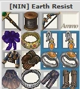 |
Stat Priorities: Earth Resist > Magic Damage Taken > Magic Defense Bonus > INT.
This set is typically used for Ouryu with Carol+Barfire you can reach extremely high magic evasion and full resist almost every incoming attack. The Wyrm actually melees in the air with earth attacks, so you can essentially nullify his entire air phase damage with this set. Many of these items are honestly too hard to get for the payoff and have very easy and cheap replacements so don't worry if this set looks unobtainable. | ||||||||||||||||||||||||||||||||||||||||||||||||||||||||||||||||||||||||||||||||||||
| |||||||||||||||||||||||||||||||||||||||||||||||||||||||||||||||||||||||||||||||||||||

Misc. Items
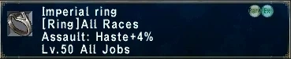 |
Best in slot ring for TP sets in Salvage and Assaults. Can be fit into an Ashitacast or Gearswap to detect if you are in those zones. |
|---|---|
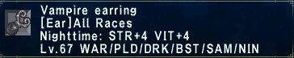 |
A very good Weaponskill earring at night, with double the amount of STR as a Triumph/Bushinomimi. |
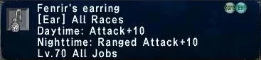 |
A very good Weaponskill earring during the day, with more attack than Merman's. |
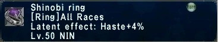 |
This activates when you are in yellow HP, and is straight up your best DPS ring when activated. You can force yellow HP by using an "HP down set" where you put a bunch of Converts HP to MP items on then take them off. You can also just use this as a conditional item in your ashitacast/gearswap. |
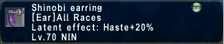 |
This is probably a meme, as just sitting at red HP is really not a good idea. It certainly theoretically is the most powerful armor item in the entire game, just hard to put into practice. |
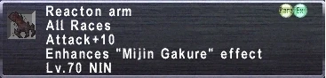 |
You know how it is. |
| Medicines | A sign of a great player is an inventory full of medicines. The linked list includes every medicine I think a Samurai should carry with them at all times, they save runs and you never know when you are going to need them. |
| Regen Items | When you are standing around it's a good idea to have Regen items equipped in order to passively gain HP. |


Food
Food guide by Falzum and Falaras
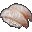

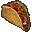

- Cream Puff's have the most INT of any food, making them the ideal Ninja nuking food as you don't really care about other stats that items like Pie's give.

I don't want to go too in depth, there are certainly other foods you can use at different times, this is just a quick and easy you should always have these around.
Looking Forward
Eden is pretty feature complete these days, the main things we are missing are higher tier Assaults which will add some new appraisal items that Ninja will like, such as Bowman's Ledelsens. Pandemonium Warden adds Hachiryu Hachimaki, we'll see if that makes any splash on Ninjas BIS lists with it's +3% crit. Absolute Virtue adds Mars Ring and Ninurta's Sash, both just perma BIS items. Technically the mythic weapon Nagi will be added and has some niche use like being the best +Enmity weapon for HNM tanking and a useful Mijin Gakure swap, but it is a VERY bad mythic so I don't think anyone will even make one.
Afterword
My first message ever on the Eden Discord back in 2019 was asking if Nin/drk tanking worked on this server, wanting to revisit my favorite niche build from 2007, it's crazy to think that even though I'm known as the Warrior guy, I wouldn't even be on Eden without Ninja. This guide was an interesting exercise for me, unlike my previous guides, I was revisiting a job I am passionate about but really very rarely play anymore. It was a blast to go back and theorycraft about Ninja, talk to other Ninjas, and even discover some new things I never knew the job could do. Shout out to Fariska for help on some of the sets that I was less familiar about. I hope this guide can let future Ninjas love this job and feel good about their job choice, Ninja has become something of a punching bag by era FFXI players but it truly is a fun and rewarding job.
Adapted from Eden Wiki: Ninja Guide by Falaras · Contributors and history · CC BY-SA 4.0. Revision 46956. Layout, links and optional background text adapted for Zenith.